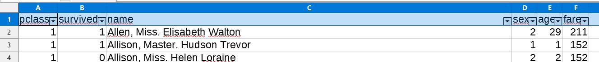

Le fichier titanic.csv comporte les données de 1309 des 1317 passagers du Titanic, paquebot ayant fait naufrage en 1912 (source : kaggle.com). Nous allons exploiter les données de ce fichier à l’aide d’un tableur.
1) Charger le fichier ci-dessous en suivant le lien : Fichier Titanic
2) Enregistrer le fichier dans vos documents - NE PAS L'OUVRIR à ce stade !
3) Ouvrir ce fichier dans un tableur (Libreoffice Calc) en faisant clic droit "ouvrir avec". IMPORTANT : à l'ouverture, décocher "virgule" Aide
Au cours du TP, vous devrez répondre à certaines questions, les réponses sont à renseigner sur un questionnaire en ligne
1) Suivre le lien pour ouvrir le questionnaire en ligne : Questionnaire
2) Répondre aux questions Q1 à Q3
Prenez garde à ne pas fermer l'onglet du questionnaire en cours de séance, puis pensez à le soumettre avant de fermer le navigateur.
Le prix d'un billet se dit "fare" en anglais
1) Déterminer le prix moyen d'un billet, le prix max et le prix min en utilisant les formules "moyenne", "max" et "min" dans le tableur
Aide
Rappel: pour utiliser une formule, commencer toujours par =
Nota pour gagner du temps : après avoir sélectionné les cellules à la souris une première fois, retenez le n° de la plus grande ligne pour taper directement
les formules sans passer par la souris !
2) Répondre aux questions Q4 à Q7 du questionnaire en ligne.
Nous allons activer le filtrage des données.
Pour cela, sélectionner la première ligne entièrement (en cliquant sur le numéro de la ligne tout à gauche),
puis cliquer sur Données / Autofiltre : une flèche apparaît dans chaque cellule de la ligne 1

1) En utilisant le filtre dans la colonne « age », ne conserver que les passagers ayant 18 ans : combien étaient ils ?
2) En ajoutant un filtre dans la colonne "survived", déterminer le nombre de passagers de 18 ans ayant survécu.
3) Réinitialiser les filtres et répondre aux questions Q8 et Q9 du questionnaire en ligne.
1) En utilisant des filtres appropriés, déterminer, parmi les femmes (sex=2) de 1ère classe, le nombre de survivantes puis le nombre de mortes.
Quelle était la probabilité de survivre, pour une femme de première classe ?
2) Déterminer, parmi les femmes de 3ème classe, le nombre de survivantes puis le nombre de mortes.
Quelle était la probabilité de survivre, pour une femme de troisième classe ?
3) Répondre aux questions Q10 à Q12 du questionnaire en ligne.
On peut trier des données en utilisant le filtre automatique implanté précédemment.
1) Dans la colonne "fare", sélectionner "tri décroissant".
--> Les passagers sont maintenant classés en fonction du prix qu'ils ont payé.
2) Parmi les 84 passagers ayant payé 100$ ou plus, combien ont survécu ?
Quel pourcentage cela représente-t-il ?
3) Parmi les 105 passagers ayant payé 7$ ou moins, combien ont survécu ? - ne prenez pas en compte les passagers pour lesquels le tarif n'est pas renseigné
Quel pourcentage cela représente-t-il ?
4) Répondre aux questions Q13 à Q15 du questionnaire en ligne, puis soumettre le questionnaire.